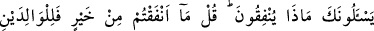

DÜNYA HAYATI
211. İsrâîloğulları’na sor ki kendilerine nice apaçık mûcizeler verdik. Kim
mûcizeler kendisine geldikten sonra Allah’ın nimetini (âyetlerini) değiştirirse bilsin
ki Allah’ın azâbı şiddetlidir.
212. Kâfir olanlar için dünyâ hayatı câzib kılındı. (Bu yüzden) onlar, îmân edenler
ile alay ederler. Oysa ki, (îmân edip) inkârdan sakınanlar kıyâmet gününde onların
üstündedir. Allah dilediğine hesapsız rızık verir.
213. İnsanlar bir tek ümmet idi. Sonra Allah, müjdeleyici ve uyarıcı olarak
peygamberleri gönderdi. İnsanlar arasında, anlaşmazlığa düştükleri hususlarda
hüküm vermeleri için, onlarla beraber hak yolu gösteren kitapları da gönderdi.
Ancak kendilerine kitap verilenler, apaçık deliller geldikten sonra, aralarındaki
kıskançlıktan ötürü dinde anlaşmazlığa düştüler. Bunun üzerine Allah îmân